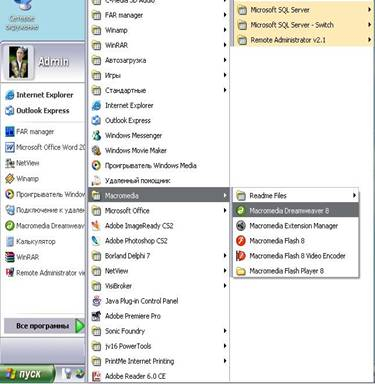
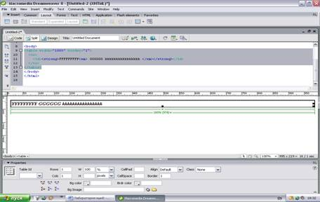
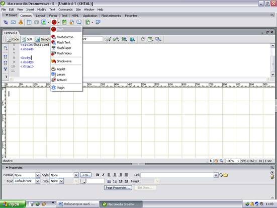

Amaliy ish №7 .
Web иловаларини яратишда Macromedia Dreamweaver дастуридан кенг фойдаланилади. Macromedia Dreamweaver дастурини ишга тушириш учун ПУСК дастурлар қаторидан Macromedia Dreamweaver дастури танланади.(1-расм). Dreamweaverнинг ишчи ойнаси очилади.

1-Расм
Dreamweaver дастурида Web саҳифа асосан обектлар ёрдамида яратилади яъни ёзилган сўз ёки расм ранг ва бошқа нарсаларни компютер автоматик HTML кодига ўгиради мисол учун:

Macromedia Dreamweaver дастурининг дастур тили ва теглари HTML коди ва JavaScript тиллари буйруқ ва теглари билан бир хил. Dreamweaver дастурини бошқа Web саҳифа яратувчи дастурлардан қулай томони бир вақтда Photoshop, Flash, Fireworks,Word дастурлари билан фойдаоаниш имконияти катта. Мисол учун Flash дастурида яратилган анимацияни қуйдагича сахифага жойлаштириш мумкин. Dreamweaver дастурини Insert менюсини Common қаторининг Flash компанентаси босилади. (3-расм)

Dreamweaver дастурининг менюлари ҳақида умумий маълумот.
File - Revert – қилинган ишни орқага қайтариш ва охирги ўзгаришни тиккалайди.
File - Check Links - ишламайдиган силкаларни қидириш.
File - Destination Notes – сайт ёки саҳифага белгилар қўйиш ва уни сақлаш.
Edit - Preferences – саҳифани созлаш (Имловий ҳатоларни тўғрилаш).
View - Design - View on Top – дизайн ойнасини ўзгартириш.
View - Visual Aids - Обектларни кўринмас элементларини ёқиш ва ўчириш.
View - Code View Options – ойнани дастур қисмини очиш ва ўчириш.
View - Rulers и Grid – Ойнада линя ҳосил қилиш ва линяни йўқотиш.
Insert – Обектларни жойлаштириш ва ҳар HTML-тегларни қўйиш;
Modify - Page Properties – Ҳолат сатри ойнасини ва шу билан бирга фон ва фонли расмни, ссылкаларни чиқариш.
Modify - Selection Properties – Ажратилган объектни ҳолат ойнасини чиқариш.
Modify - Quick Tag Editor – Тегни алоҳида ойнада тезкор таҳрирлаш.
Modify - Make Link – Объект учун гиперсслка ташкил этиш.
Modify - Library - кейинроқ фойдаланиш учун объектни библотекага қўшиш.
Text – Матнни форматлаш.
Commands - Clean Up HTML – DreamWeaver, теглар нуқта назарида хужатни “ортиқча”лардан тозалаш.
Commands - Clean Up Word HTML – Ортиқча матнларни тозалаш.
Commands - Optimize Image In Fire Works – FireWorks графикасини активлаштириш.
Commands - Set Color Scheme – Сайтни ранги схемасини ўзгартириш.
DreamWeaver дастурини Instert менюси қуйдаги
компаненталарни ўз ичига олади.
Common – бу бўлим матнларга ссылка бериш e-mail ссылкалар яратиш сахифага закладка қўйиш, таблица ташлаш, расм жойлаштириш ва Flash элементларини қўйиш мумкин